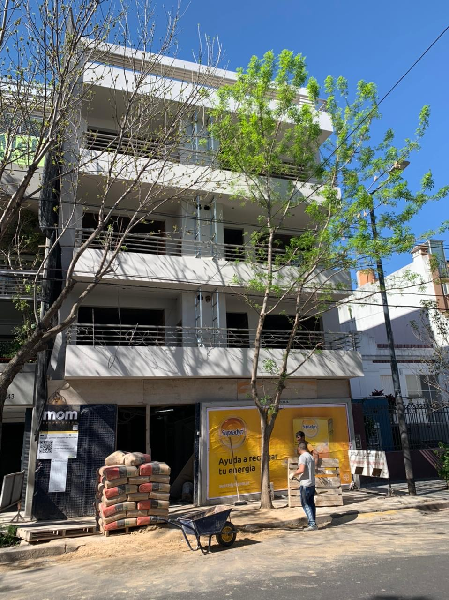

Quienes somos?

Con más de 20 años de experiencia, somos una empresa multidisciplinaria dedicada a realizar emprendimientos arquitectónicos, desde su concepción y desarrollo, hasta su comercialización. Especializándonos en la vivienda de alta calidad constructiva, concebimos espacios funcionales de gran diseño y delicada terminación actualizándonos permanentemente en materiales y tecnologías, dándoles a nuestros clientes un producto de gran confort arquitectónico. Al igual que en los desarrollos inmobiliarios, realizamos también acondicionamientos, reformas, y puesta en valor de edificios comerciales e institucionales para diversas empresas. Siempre con el valor agregado de un trabajo personalizado. Eso es, estudio mom.